#44493AFondo del artboard 1 del PDF del logo. Escenas 1 y 5.
#758457Artboard 3 del PDF; es el verde de la foto de perfil (#748457). Escena 2.
#DBB485Las sillas de madera de la barra. Palabras clave en cursiva.
#ECEBE8Tinta del logo. Texto sobre fondos oscuros y tarjetas de cristal.
#2A2D23El oliva del logo llevado a sombra, como el contenedor negro. Texto sobre claro.
#616850Artboard 2 del PDF.
#62665CArtboard 4 del PDF.
#694331El aviso de acero corten. Detalles y avatares abstractos.
#F2D8AELas banderas del menú iluminadas de noche.
Contrastes: crema sobre oliva profundo 7,8:1 · carbón sobre crema 11,8:1 · madera sobre oliva profundo 4,8:1.
Serif clásica de alto contraste, como el nombre del logo. Cursiva para la palabra clave.
Biografía, interfaz del teléfono, comentarios y notificaciones.
Mayúsculas con espaciado amplio, igual que el lema del logo.
| Tiempo | Escena | Qué pasa |
|---|---|---|
| 0–4,7 s | 1 · Apertura de interfaz | "IMAGINA TUS REDES ASÍ". Un kit de marca se arma solo: logo con rebote, paleta, tipografías y barra de carga. Titular: "Así serían tus redes sociales si trabajaras con nosotros." Barrido circular verde. |
| 4–15,6 s | 2 · Así se verían tus redes | Teléfono con el perfil real (@entrevrde, bio, 17 / 1.799 / 22) y 9 publicaciones en cascada (6 fotos HD y 3 con titular). Desplazamiento, Reel nocturno, corazones, comentarios, "Enviado a 3 amigos" y notificaciones de ejemplo. Etiqueta: "Contenido que se comparte". |
| 15,1–25,7 s | 3 · Salto al lugar | Montaje a pantalla completa, como un video normal, con zoom lento y paneo: "Experiencias para la gente que quiere compartir.", seguido de la frase de su historia destacada, plano por plano. Contador 01/05. |
| 25,4–29,7 s | 4 · Una experiencia para compartir | Dos polaroids que se juntan ("tú…" / "…y alguien más"), íconos orbitando y "No es solo un producto. Es una experiencia para compartir." con óvalo dibujado. |
| 29,3–33,5 s | 5 · ¿Te animas? | Pregunta sola y enorme, que respira. Logo de Entreverde × logo de la agencia y contacto. Un último corazón. |